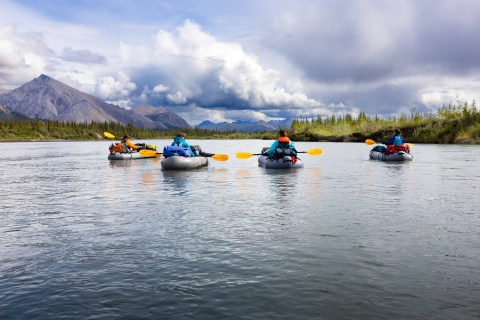

White Water Rafting Trips
Trip 1: Wild Rapid Adventure
Embark on an adrenaline-pumping journey down the untamed rapids of the majestic River Rush. This thrilling trip is perfect for thrill-seekers and experienced rafters looking for a heart-racing adventure. Navigate through swirling currents, conquer steep drops, and feel the rush of white water as you tackle intense rapids. Be prepared for an exhilarating experience that will leave you breathless and craving for more!
Trip 2: Scenic River Expedition
Experience the awe-inspiring beauty of nature on our Scenic River Expedition. Drift along the tranquil waters of the Serene River, surrounded by lush greenery and breathtaking landscapes. Immerse yourself in the serenity of the untouched wilderness, as you spot fascinating wildlife and discover hidden gems along the riverbanks. This trip is perfect for nature lovers seeking a peaceful and picturesque rafting experience that will rejuvenate your soul.
Trip 3: Extreme Canyon Plunge
Dare to take on the ultimate challenge with our Extreme Canyon Plunge trip. Brace yourself for a heart-stopping adventure as you navigate through treacherous canyons and formidable rapids. Experience the sheer power of the roaring waters as you plunge into narrow gorges, surrounded by towering cliffs. This high-intensity trip is designed for thrill-seekers craving an adrenaline rush and an unforgettable white water rafting experience that will push your limits.
| Trip | Duration | Price |
|---|---|---|
| Trip 1 | 3 days | $200 |
| Trip 2 | 5 days | $350 |
| Trip 3 | 7 days | $500 |